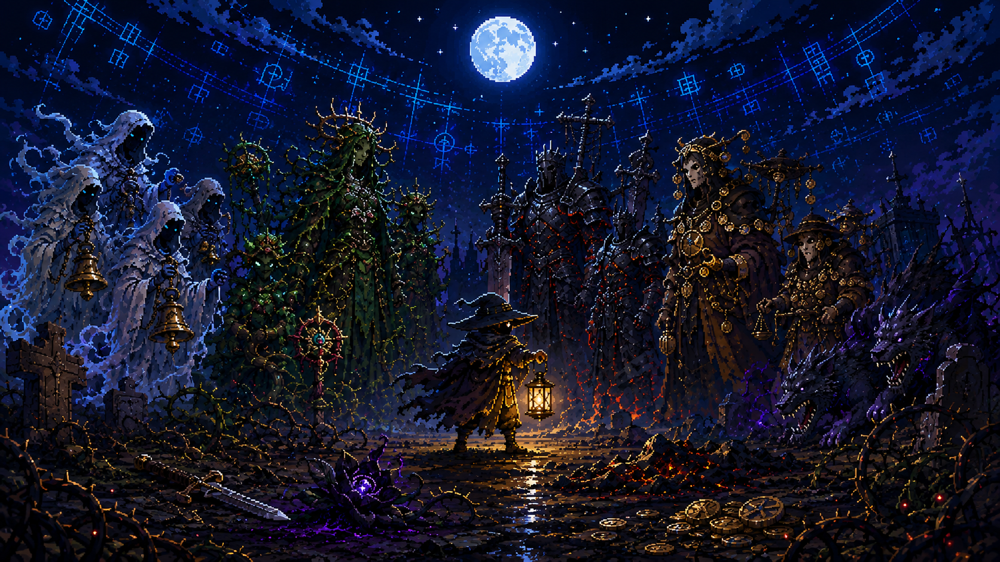

5-12
Minute Runs
모바일에 맞춘 짧은 세션. 이동, 회피, 스킬, 궁극기 중심의 압축 액션.
죽은 왕국은 당신의 승리와 실패를 기억한다. 매 전투의 흔적이 다음 밤의 적, 오멘, 세력 원한, 보스 의식으로 되돌아오는 다크 판타지 액션 로그라이트.
Game Identity
한 판은 짧고 전투는 즉각적이지만, 플레이어의 습관과 실패는 월드 장부에 누적됩니다. 반응은 하드 카운터가 아니라 예고, 선택, 보상을 가진 오멘으로 돌아옵니다.
모바일에 맞춘 짧은 세션. 이동, 회피, 스킬, 궁극기 중심의 압축 액션.
독, 화염, 회피, 사망 위치, 세력 압박 같은 행동 태그가 다음 전투 변형으로 연결됩니다.
Hollow Choir, Thorn Court, Ashen Kin, Pale Market, Moonless Brood가 세계 단위로 반응합니다.
Key Visuals

Core System
개별 적이 복수하지 않습니다. 세계가 기록하고, 지역과 세력이 반응하며, 오멘이 발생합니다.
World Pressure
장송 성가대와 망령. 소리 장판, 공포 디버프, 종소리 파동으로 압박합니다.
가시 귀족과 식물 괴물. 속박, 출혈, 덩굴 지형으로 이동 선택을 제한합니다.
재의 기사단. 화염 저항, 돌진병, 폭발 낙인으로 정면 압박을 강화합니다.
죽은 상인들. 가격 변동, 저주 상품, 금화 폭탄으로 경제 선택을 흔듭니다.
달 없는 짐승. 시야 제한과 추적자 웨이브로 반복 사망 지역을 위협합니다.
보스는 고정 캐릭터입니다. 플레이어 행동은 보스 개인 성장 대신 의식 카드 조합으로 반영됩니다.
Production Plan
2 weeks. GDD, art bible, combat prototype, key visual draft, legal risk checklist.
8 weeks. 1 character, 2 weapons, 1 region, 1 boss, Ledger result screen.
12 weeks. Core content expansion, save/settings/achievements, balance logging tools.
10 weeks. Full launch content, tutorial, store screenshots, optimization pass.
4 weeks. Google Play internal test, Steam page preparation, final tuning.
Repository Docs
기획, 시스템, 아트 방향, 법적 리스크 메모는 저장소 문서로 관리합니다.